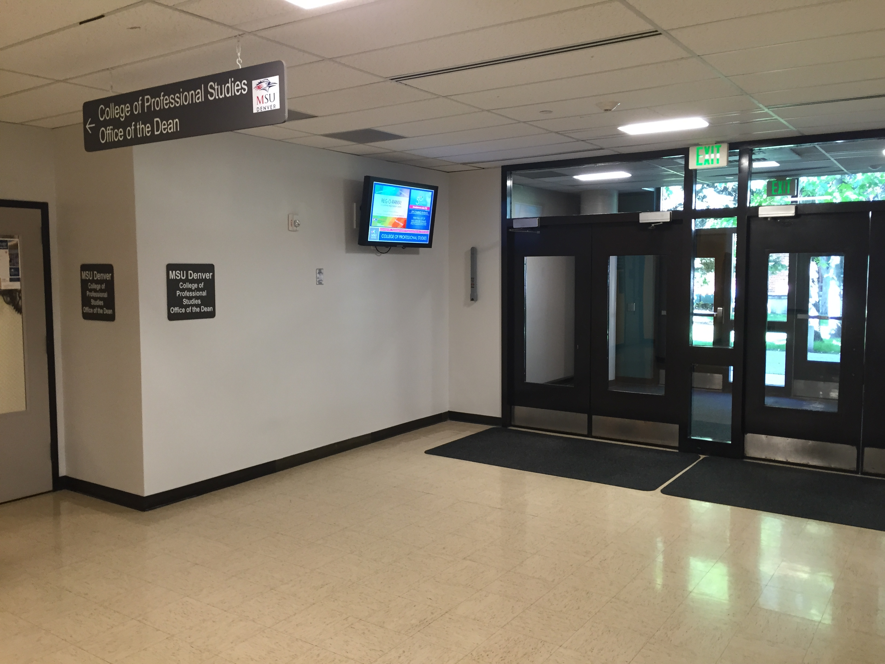
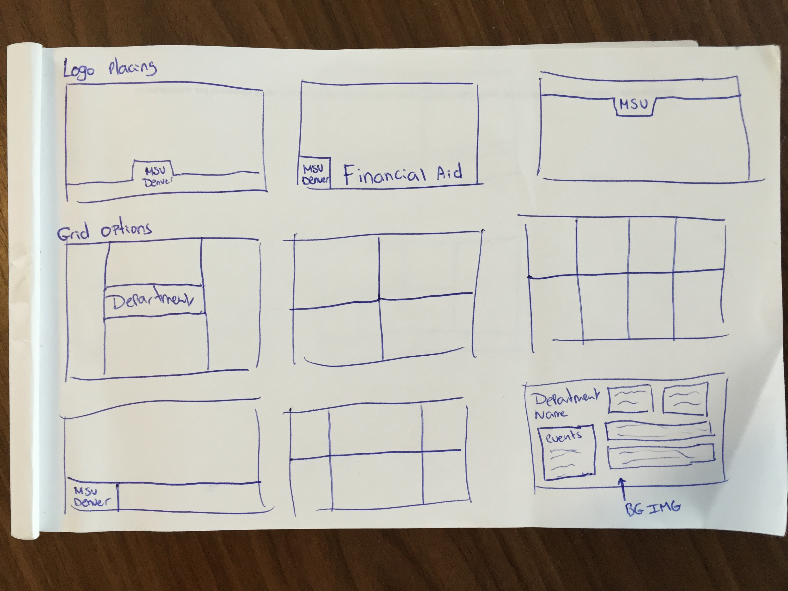

Introduction
Metropolitan State University had multiple designed TV displays (signage) around campus which were in need for a fresh touch/update (see example 1, photo displayed underneath). This project was to redesign and recode a new template (or several in the future) for departments within the University to use. The goal was to walk away from current software the University has been using and had to pay for, this allowed us to use our own Web Content Management System (WCMS, also known as Terminal Four). This means that when University’s staff update their department's website, they can also update their digital display signage from within the same place.
These new templates were to be designed within the scope of MSU Denver branding requirements, and the new generated templates were to be created using a different coding language (HTML/CSS/JavaScript). After the new design was approved, the next step was to integrate the new signage design and code within the University’s WCMS to allow any department to work on their own content to be displayed (this is still in progress).
Example 1. Current signage in need for update. Located in Student Success Building.
Learning About Current Usage
Before I could start working on a new design, it was important to understand what we were currently using for signage management. By doing so, I learned about the current usability of the software that users were using at that time and how much of a change it would or could be for the new design and content system. I had set up a meeting with Evan, who is the signage go-to-person in our department (Marketing and Communications). On this day, we discussed all the current features of Livewire, which was the name of the software currently used for the signage displays. Here is a PDF document which shows what steps I took to get a better understanding of the Livewire digital software. After that, we discussed what was missing, what he wished to see different, current limitations, how much things cost, and so on. Evan told me that if I were to redesign the screens, that it should be very legible, stay within the University’s branding requirements, and redesign it in a way that everyone would be able to understand what they are seeing after the update. Evan was a support throughout the project, and when I had questions he had no problem answering them. He was looking forward to something new for the displays as well.
Current Signage
Having a first look at the current signage template you will see directly that it’s not running smooth. The screen has one big background image and content is on top of that. It seems like the system has trouble loading and running all the content. These are some factors to consider for the redesign, since we are going to implement it in a WCMS, it being a web application is going to smooth things out very nicely. See “example 2” underneath for a visual breakdown of the current signage template.
 Example 2. Current signage breakdown. One background image with content on top of it.
Example 2. Current signage breakdown. One background image with content on top of it.
What are we missing?
Just after going around campus to look at all the screens currently in use, I noticed that almost all of the displays are 6 foot off the ground or higher. Some are even higher (see example 3 and 4) so that people can’t mess with the displays and/or walk under them. The fact that you have to look up is not a big deal because they definitely grab your attention, however, this does reminded me that legibility is a big factor.
 Example 3. Admin Building. College of Business.
Example 3. Admin Building. College of Business.
Example 4. Art Building. College of Professional Studies.
Pros and Cons
If we take a second to look at the positives and negatives, we could increase our knowledge in what needs to be changed for a better working design and system. At this point I already have an idea of what needs to be done, though. To start with, we need to use our University’s owned system (WCMS), this will save a lot of money annually. By dropping Livewire, we will also have more freedom in adding and changing the design, content, widgets, and more. By migrating the current editing tool into terminal four, that will let authors change their signage as easy as their website editing is. They could even use the same content for both web and signage, this way they only would have to change one piece of content to change it at both locations.
Making the new template more user friendly and giving it a better load time will definitely make a difference. However, reuse can also play a big factor. I did really like the 2D bottom part of the current design made by Evan (see example 5), so I have decided to leave this in and design the rest in the same style for my proposal. In my proposal the font will have to be changed to something that the MSU Denver branding requirements allows. Also, the design should be more mathematically correct than the current one.
Example 5. Footer design by Evan.
Meetings
There were many questions asked to Miguel (my supervisor) and Evan (the signage person) by me. I’ve had multiple meetings with both of them separately just to get a better understanding of the problems we were having with the signage, but also the tools that were available to use. This was tough because in a bigger office/department such as this, it’s sometimes hard to get a hold of each other since everyone has their own projects to work on. So everything needs to be planned in advance to talk about certain things. This actually took up a lot more time than I could have imagined. I think it’s interesting how important the meetings were when it comes to projects, even when you lead the project yourself. You still need approval and picking other people's brains just in case you are forgetting something. In these meetings we talked about what worked and what didn’t work for my ideas, also they gave me other ideas that I could work with. For example, Evan said that the display’s need to show the time because right now they do not. Also, some of my ideas got shut down right away, which was good because that way I didn’t spent any more time on it. Now I was ready to write an actual design plan.
Proposing Solutions
At this point in my internship I was ready to write up a design brief with most of the things I have learned about the signage displays. Here I were to explain my main goals, who would be involved (such as the viewer), why it needs to be updated, user consideration, competitive examples, identity treatments, and so on. I wrote this all in this PDF proposal, which I wanted to get approved by Miguel and Evan before I would take any further steps.
Sketching / Wireframing
Once my ideas and goals were approved by Miguel and Evan from the design brief, I moved on to some wireframing. At first I had the idea of making a complete 2D design for the signage using the MSU Denver brand guidelines. However, since we were also working on the 50th website this whole time I thought maybe I could do something with that. See example 6 and 7 for some unsuccessful wireframes.
Example 6. Grid Wireframes.
Approval Approval Approval
When you design something for a big University, you can’t always design things that you like. If you do, that’s a total win, but I have learned that certain things work, and others do not, even if you don’t like it. When I showed my idea for the 50th style screen, well, that got thrown out pretty quick. Although, people liked my 2D idea a lot better. So I kept going with that idea. I worked with the University’s colors to keep the brand identity going and I also selected the right font (Open Sans), which was allowed according to the brand guidelines. Then I wanted to focus on hierarchy and size correctness (as in mathematically it’s correct). Oh, also keep in mind that the “approval” process also can take up a few days here and a few days there. It’s a good day if you can get an answer within the day!
Final solution
final approved design here
Handing off work
Now the design needs to be coded using the researched software and to be integrated with terminal 4